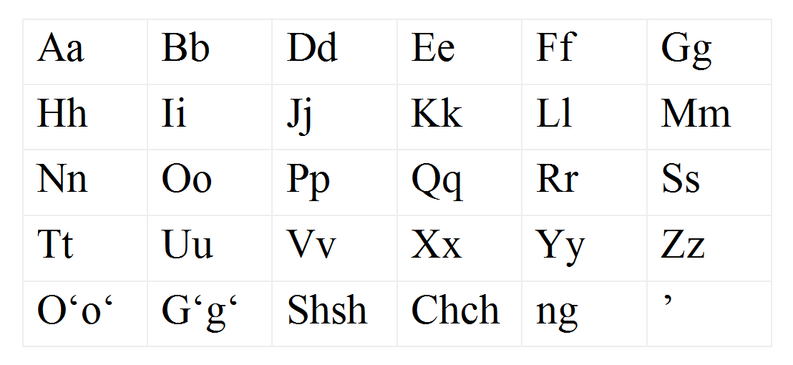

Senate Approves New Version of the Uzbek Alphabet: 28 Letters and One Apostrophe
On Sept. 10, the Senate of the Oliy Majlis approved a law replacing the letters Sh, Ch, O‘ and G‘ with Ş, Ç, Ö and Ğ. If the law takes effect, first-grade textbooks will switch in 2027, with the full transition completed by 2031.

On Sept. 10, 2026, the Senate of Uzbekistan's Oliy Majlis approved a law amending the Latin-based alphabet of the Uzbek language. Under the new version, the alphabet will consist of 28 letters and one apostrophe. The current alphabet had 26 letters, two letters with apostrophes and three letter combinations.
Which characters change
The law provides for replacing four “problem” characters with single letters. The combination Sh is replaced by the letter Ş, the combination Ch by Ç, the apostrophed letter O‘ by Ö, and G‘ by Ğ. The combination Ng is removed from the alphabet as a separate unit — it remains only as a combination of two letters.
- Sh → Ş
- Ch → Ç
- O‘ → Ö
- G‘ → Ğ
- Ng — removed as a separate unit
- New alphabet: 28 letters + 1 apostrophe
- Current alphabet: 26 letters + 2 apostrophed letters + 3 combinations
The stated rationale
According to Senator Odiljon Mamatkarimov's explanation, the main reason for the reform is problems in the digital environment. The apostrophe in the letters O‘ and G‘ is not supported on standard keyboards; in some cases several keystrokes are required to type a single letter.
Modern information technology does not recognize words containing these letters as single words.
— Odiljon Mamatkarimov, member of the Senate of the Oliy Majlis (from Gazeta.uz translation, 10.09.2026)
In practice, because various forms of the apostrophe are used — the straight apostrophe, the curly apostrophe, several Unicode characters — more than ten written forms of a single word have emerged. This has led software and search engines to treat identical words as separate entries.
According to the senator, these sounds occur three to five times more often in Uzbek than in English — meaning the problem is not limited to a handful of words.
Expected outcomes
Supporters of the bill cite a faster pace of development for keyboards and artificial intelligence models, alignment of the alphabet with international ISO standards, and easier book exchange among Turkic-speaking countries. Another aim of the reform is to move closer to the principle of “one sound, one letter.”
Timelines
Once signed by the president, the law takes effect from 2027. First-grade textbooks will be converted to the new alphabet in 2027, and the full conversion of all textbooks will be completed by 2031.
Existing documents remain valid indefinitely — that is, citizens will not be required to replace passports, diplomas or property documents. Banknotes, street signs and other markings in the old script may be used until they wear out or until set deadlines.
- Law takes effect: 2027
- 1st-grade textbooks: 2027
- All textbooks: by 2031
- Existing documents: remain valid indefinitely
- Scope of effect: close to 40 million Uzbek speakers
Critical views
Education specialist Komil Jalilov raised the question of whether sufficient research had been conducted before the decision. He pointed to the need for studies comparing reading and comprehension speed across different age groups, as well as the transition costs for publishers and the burden falling on an already literate population.
The Senate's materials did not disclose the voting results or the overall cost of the reform.
The history of the reform
Uzbekistan adopted a law on the transition to Latin script in 1993, and in 1995 made substantial changes to the alphabet — it was in that version that the letters O‘ and G‘ were designated with an apostrophe and Sh and Ch as combinations. Cyrillic and Latin scripts have continued to be used in parallel in the country since then.
The process of revising the current version began in July 2023 on the instruction of President Shavkat Mirziyoyev. A Scientific and Technical Council has since proposed several options, and public discussion has been held in several stages.
The scope of the change
The change will affect schools, state registries, keyboards, search engines and artificial intelligence models. The number of native Uzbek speakers — including Uzbeks in Uzbekistan and neighboring countries — is estimated at close to 40 million.
Among Turkic-speaking countries, the letters Ş, Ç and Ğ are already used in the Turkish alphabet; the letter Ö appears in the Turkish and Azerbaijani alphabets. Azerbaijan moved to Latin script in 1991 and Turkmenistan in 1993. Kazakhstan has revised its Latin script project several times.
The practical problem in the digital environment
The problem with the apostrophe looks like this in everyday practice: to type the word “o‘zbek,” a user may use a right quotation mark, a left quotation mark, a straight apostrophe or a special Unicode character (ʻ). Each variant counts as a separate character to a computer. As a result, one word is stored in a database as several different entries, and a search engine cannot link them to each other.
This situation can lead to errors in matching names and surnames in state registries, banking systems and e-government platforms. According to Senator Mamatkarimov, more than ten written forms of a single word occur in practice.
This is also a serious obstacle in training artificial intelligence models: if a model treats different spellings of the same word as separate units, the training data is “diluted” and model quality declines. Uzbek is among the relatively small languages by volume of online content, so every unit of data matters.
The question of Cyrillic script
Latin and Cyrillic scripts have been used in parallel in Uzbekistan since 1993. State documents, school textbooks and official websites are mainly in Latin script; at the same time, some newspapers, the book market and much of the older population continue to use Cyrillic.
The new version does not abolish Cyrillic script or prohibit its use. The law amends only the composition of the Latin-based alphabet.
The experience of neighboring countries
Azerbaijan moved to Latin script in 1991 and Turkmenistan in 1993. The Azerbaijani alphabet contains the letters Ş, Ç, Ğ and Ö — meaning the characters Uzbekistan is proposing are already in use within the Turkic language family. The Turkish alphabet also has these four letters.
Kazakhstan has revised its Latin script project several times since 2017: an apostrophe-based version was proposed first, then an acute-accent version, and then a version with umlauts and cedillas. The transition deadline has been postponed several times. Kyrgyzstan and Tajikistan have retained Cyrillic script.
Questions of cost and preparation
The Senate's materials did not disclose the overall cost of the reform. Education specialist Komil Jalilov listed transition costs for publishers, the scale of reissuing textbooks, and the burden of relearning on an already literate population among the main questions.
He also noted that studies comparing reading speed and comprehension levels across different age groups should have been conducted before the decision was taken. The results of any such studies have not been made public.
For the diaspora
The change also concerns Uzbeks living outside Uzbekistan. Uzbek communities in Russia, Kazakhstan, Turkey, South Korea, the United States and European countries rely mainly on online sources — meaning the new alphabet will spread first through digital channels.
The Uzbek community in northern Afghanistan uses an Arabic-based alphabet. The law does not apply to their script.
What comes next
Having been approved by the Senate, the law goes to the president for signature. After it is signed, the Cabinet of Ministers is expected to adopt decisions on the transition schedule, the procedure for reissuing textbooks and the adaptation of state information systems.